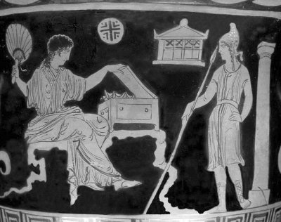

"Hem kendinin hem halkının birikimlerini yiyip içen ve anası Penelopeya'yla sözde evlenmek isteyen soylu talipleri tek başına evinden kovamayacağını anlayan Telemahos, yıllardır Troya'dan dönemeyen babası Odisseus'u deniz ötelerinde aramaya çıktı. Gemide arkadaş olarak baba dostu kılığında tanrıça Atena ve ülkelerini sömürgenlerden temizlemek üzere onunla savaşıma girişecek gönüllü genç dostları da vardı."
Telemahos ve arkadaşları, ilk olarak Troya savaşları sonunda ülkesine dönebilenlerden iyi yürekli kral Nestor'un ülkesine gittiler gemileriyle. Babacan kral Nestor, genç Telemahos'u iyice dinledi. Sonra da babası Odisseus hakkında çok daha fazla şeyler bilen güzel Helena'nın kocası kral Menelaos'un yanına gitmesini önerdi. "Arkadaşların da burada kalıp seni beklesinler," dedi. İki tez ayaklı atın çektiği bir araba hazırlattı hemen ve kılavuz olarak oğlu Peysistratos'u (Peisistratos) görevlendirdi.
Telemahos ve yeni arkadaşı Peysistratos, Menelaos'un sarayına vardıklarında çok iyi karşılandılar. Kral, hiç tanımadığı bu iki konuğuna, Troya savaşından ve çok sevdiği eski arkadaşı kral Odisseus'tan söz etti sohbet olsun diye. Ne var ki onun anlattıklarını dinledikçe Telemahos'un gözlerinden ince ince yaşlar süzülmeye başladı. Kral Menelaos, hiç tanımadığı bu delikanlının gözleri yaşarınca, onun Telemahos olabileceğini düşündü birden! Üstelik ne kadar da çok benziyordu Odisseus'a! Acaba doğru mu diye soracak oldu... Ama daha karnını doyurup ağırlamadığı bir konuğa kim olduğunu sormak çok ayıp olurdu! Zaten böyle bir şey Akdeniz törelerine aykırıydı... O anda dillere destan karısı ve Baştanrı Zeus'un kızı o güzel Helena çıkageldi yanlarına ağır ağır yürüyerekten!.. Hepsi de ondan yana çevirdiler başlarını hemen. "Ne de çok benziyor altın örekeli tanrıça Artemis'e!" diye ortak bir düşünce geçti her birinin kafasından. Helena da delikanlılara baktı bir süre. Ama en çok Telemahos üzerinde odaklandı ilgisi... "Söylesene Menelaos," dedi kocasına. "Kimmiş bu genç konuklarımız? Bak yüreğim ne diyor, biliyor musun? Şu delikanlı olsa olsa Odisseus'un oğlu olur!.." Birden bir sessizlik çöktü tavanı altın, kehribar işlemeli salona... "Odisseus savaşa giderken onu memede bırakmıştı..." diye yeniden konuşmaya başladı Helena. "Evet, benim gibi köpek gözlü bir kadın yüzünden hem Troyalı, hem Yunanistanlı nice yiğitler kırıldı o savaş alanlarında!.." Tam burada kocası Menelaos; "Niye böyle hep kendini savaş suçlusu sayıyorsun, kadınım?" diye sözünü kesti. "Bizden sonraki kuşaklar bu savaşın nedenini anlayacaklar! Hem de onlara güzel bir örnek olacak..." Bunun üzerine Helena; "Evet," dedi üzgün üzgün, "ama gene de kendimi suçlu görüyorum... Neyse.. Şu sarışın delikanlı sahiden kral Odisseus'un oğlu olmasın?"
Bunun üzerine; "Ben de onu az önce Odisseus'a benzettim!" diye gürledi Menelaos. "Tam ben soracaktım, sen geldin... İnce ince gözyaşları döküp yüzünü şu erguvan rengi harmanisiyle örttü garibim!.." Telemahos hemen yanıt verecek güç bulamadı kendinde. Ama arkadaşı Peysistratos; "Evet, ulu Menelaos, söylediğin doğru," diye konuştu Telemahos'un yerine. "Odisseus'un oğlu Telemahos'un ta kendisi o! Babam yaşlı kral Nestor gönderdi bizi buraya. Telemahos, babası Odisseus hakkında senden bir şeyler öğrenmek istiyordu. Çünkü babasız kalınca çok şeyler gelmiş başına. Halkı da onun başındaki belaları savacak tam bir tepki gösterememiş!.."
Bu sözler üzerine bir süre dili tutulur gibi olan Menelaos; "Demek can dostumun oğlu gelmiş evime! Bu ne büyük mutluluk, ey Zeus!" diye haykırdı. Hemen yerinden fırlayıp bir baba gibi sarılıp sarılıp öptü Telemahos'u!.. "Benim yüzümden nice savaşlara, acılara katlandı baban!" diye bir şeyler anlatmaya çalıştı. Sonra da sözlerinin üstüne basa basa konuştu: "Troya'dan sağ salim dönersek Odiseus'u ülkemde ağırlayacağım, diyordum hep kendi kendime... Hem de geçici bir ağırlama olmayacaktı bu! Burada bir konak yaptıracaktım ona... İçi dışı tekmil döşeli bir konak! Ayrıca bütün halkını da buraya yerleştirecektim!.. Onlar için büyük bir kent kurduracaktım... Böylece yakınımda olacaktı hep baban Odisseus; artık halklarımızla birlikte, iç içe olacaktık. Bizi kıskanan diğer komşu halklar da bizim gibi topraklarını ve emeklerini birleştireceklerdi. Artık bu güzelim Akdeniz topraklarında bir daha yakım yıkım getiren Troya savaşları olmayacaktı! Barış ve bolluk içinde, hepimiz kardeş kardeş yaşayıp gidecektik!.."
Burada aniden sustu kral Menelaos. Ama herkesin içinden karşı konulamaz bir ağlama isteği gürledi birden. Tanrı Zeus'un kızı güzel Helena başladı ilkin hıçkırmaya. Sonra Menelaos'la Telemahos...
Nestor'un oğlu da tutamadı kendini.

Helena ve Paris